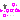
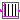
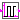

This package contains utility blocks that are usually not directly utilized but are used as building blocks for "higher level" blocks.
Extends from Modelica.Icons.Package (Icon for standard packages).| Name | Description |
|---|---|
|  UpSample | Upsample the clocked Boolean input signal and provide it as clocked output signal |
|  AssignClockToTriggerHold | Generate a Boolean continuous-time trigger signal from a clocked Boolean input |
|  AssignClockToSquareWaveHold | Generate a Boolean continuous-time square signal from a clocked Real input |
This block for Boolean signals works similarly as the corresponding block for Real signals (see RealSignals.Sampler.Utilities.UpSample).
Analog to the corresponding Real signal block example there exists an elementary example for this Boolean block.
| Name | Description |
|---|---|
| inferFactor | = true, if upsampling factor is inferred |
| factor | Upsampling factor >= 1 (if inferFactor=false) |
| Name | Description |
|---|---|
| u | Connector of clocked, Boolean input signal |
| y | Connector of clocked, Boolean output signal (clock of y is faster as clock of u) |
This block for Boolean signals works similarly as the corresponding block for Real signals (see RealSignals.Sampler.Utilities.AssignClockToTriggerHold).
Extends from Modelica_Synchronous.ClockSignals.Interfaces.ClockedBlockIcon (Basic graphical layout of block where at least one input or output is a clocked variable).
| Name | Description |
|---|---|
| y_start | Initial value of output signal |
| Name | Description |
|---|---|
| u | |
| y | Connector of Boolean output signal |
This block for Boolean signals works similarly as the corresponding block for Real signals (see RealSignals.Sampler.Utilities.AssignClockToSquareWaveHold).
Extends from Modelica_Synchronous.ClockSignals.Interfaces.ClockedBlockIcon (Basic graphical layout of block where at least one input or output is a clocked variable).
| Name | Description |
|---|---|
| y_start | Initial value of output signal |
| Name | Description |
|---|---|
| u | |
| y | Connector of Boolean output signal |